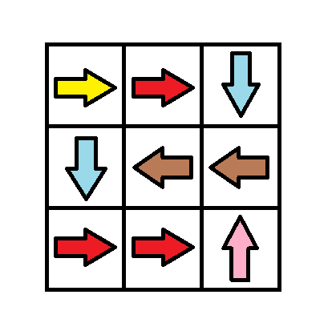
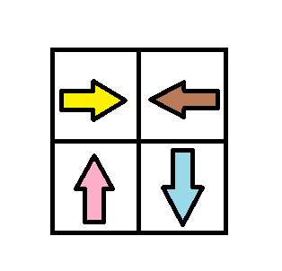

1368. Minimum Cost to Make at Least One Valid Path in a Grid
Hard
Given a m x n 
grid. Each cell of the grid has a sign pointing to the next cell you should visit if you are currently in this cell. The sign of grid[i][j] can be:
- 1 which means go to the cell to the right. (i.e go from
grid[i][j]togrid[i][j + 1]) - 2 which means go to the cell to the left. (i.e go from
grid[i][j]togrid[i][j - 1]) - 3 which means go to the lower cell. (i.e go from
grid[i][j]togrid[i + 1][j]) - 4 which means go to the upper cell. (i.e go from
grid[i][j]togrid[i - 1][j])
Notice that there could be some invalid signs on the cells of the grid which points outside the grid.
You will initially start at the upper left cell (0,0). A valid path in the grid is a path which starts from the upper left cell (0,0) and ends at the bottom-right cell (m - 1, n - 1) following the signs on the grid. The valid path doesn't have to be the shortest.
You can modify the sign on a cell with cost = 1. You can modify the sign on a cell one time only.
Return the minimum cost to make the grid have at least one valid path.
Example 1:
Input: grid = [[1,1,1,1],[2,2,2,2],[1,1,1,1],[2,2,2,2]] Output: 3 Explanation: You will start at point (0, 0). The path to (3, 3) is as follows. (0, 0) --> (0, 1) --> (0, 2) --> (0, 3) change the arrow to down with cost = 1 --> (1, 3) --> (1, 2) --> (1, 1) --> (1, 0) change the arrow to down with cost = 1 --> (2, 0) --> (2, 1) --> (2, 2) --> (2, 3) change the arrow to down with cost = 1 --> (3, 3) The total cost = 3.
Example 2:
Input: grid = [[1,1,3],[3,2,2],[1,1,4]] Output: 0 Explanation: You can follow the path from (0, 0) to (2, 2).
Example 3:
Input: grid = [[1,2],[4,3]] Output: 1
Example 4:
Input: grid = [[2,2,2],[2,2,2]] Output: 3
Example 5:
Input: grid = [[4]] Output: 0
Constraints:
m == grid.lengthn == grid[i].length1 <= m, n <= 100